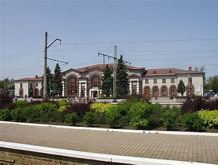

О городе
Ясиноватая — город в Донецкой Народной Республике России. Является городом республиканского значения и центром одноимённого городского округа. До 2022 года относился к Донецкой области Украины. Находится в составе Донецко-Макеевской агломерации.
Предыстория
- Город имеет богатую историю и важное стратегическое значение благодаря своему расположению и железнодорожной инфраструктуре.
Последние события
- В городе велись активные боевые действия, повлекшие за собой значительные разрушения и потери.
- Работы по восстановлению инфраструктуры продолжаются при поддержке российских регионов и местных властей.
Последующие события
- Город активно восстанавливается. Ведутся работы по реконструкции дорог, зданий и коммунальных объектов.
Недавние новости
Реконструкция дорог в Ясиноватой
23 апреля 2024 8:56
В Ясиноватой начались работы по капитальному ремонту сети автомобильных дорог. Челябинская область оказывает большую поддержку городу в вопросах восстановления дорожной инфраструктуры.
В Ясиноватой восстановили мемориал
08 мая 2024 05:27
Военнослужащие и местные жители восстановили мемориал "Воинам Советской армии, погибшим за освобождение города Ясиноватая в 1943 году". Работы завершены ко Дню Победы.
Новые социальные объекты
09 мая 2024
В городе открылись новые социальные объекты, включая детские площадки и культурные центры, что способствует повышению качества жизни горожан.